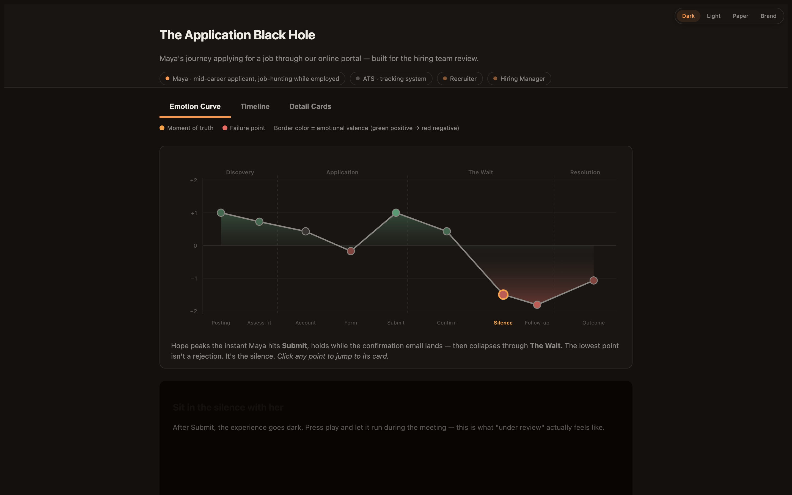
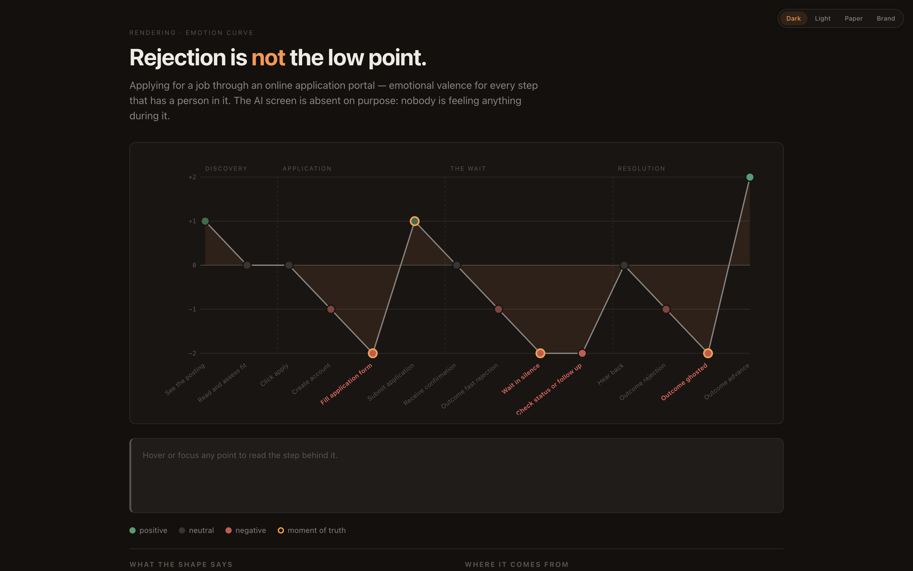
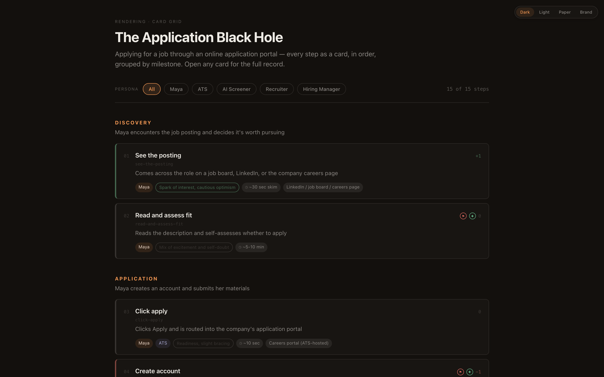
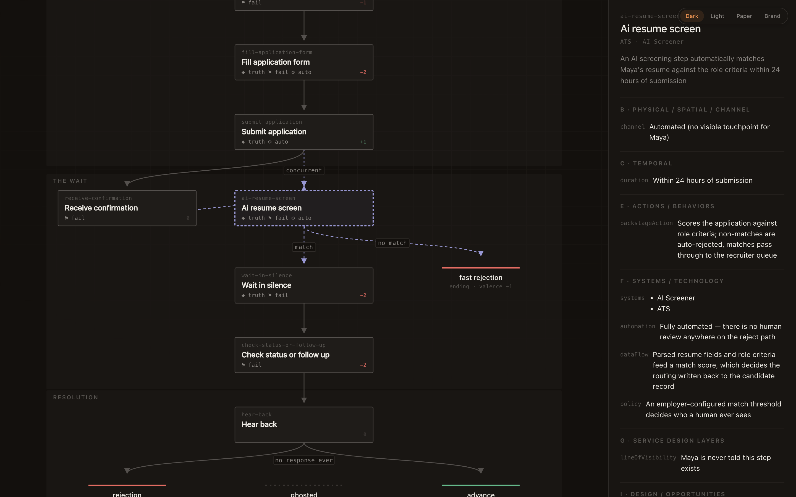
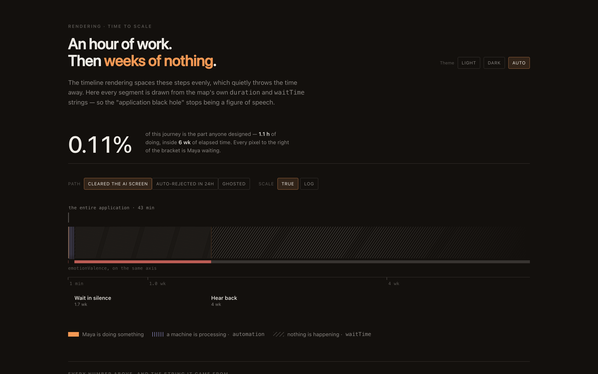
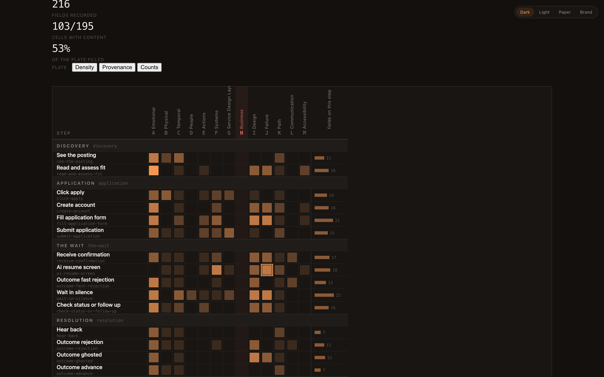
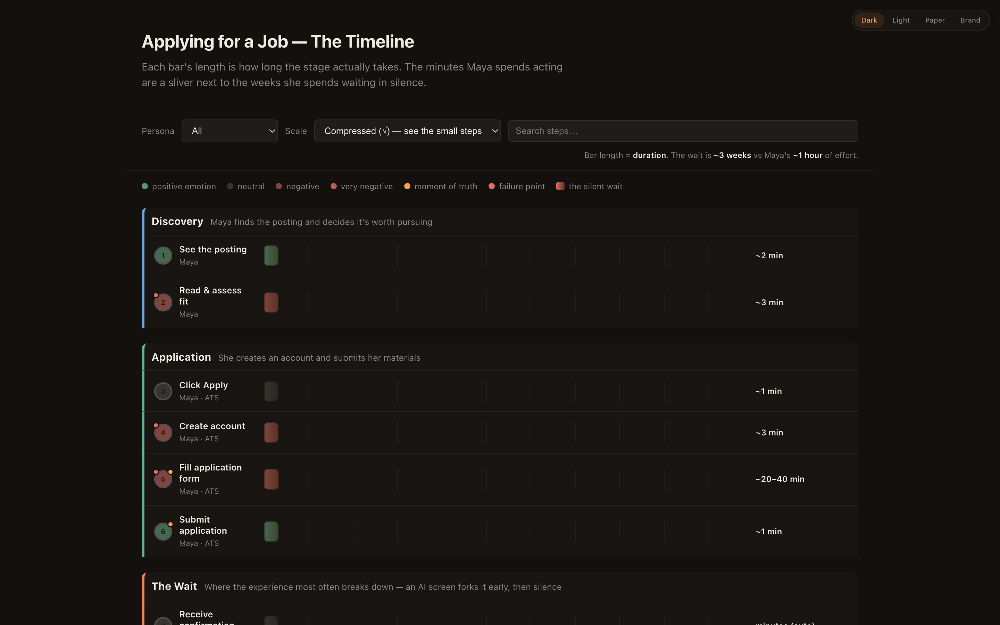
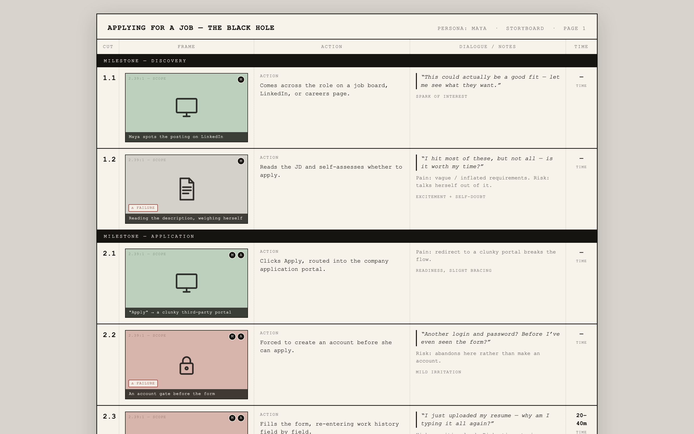
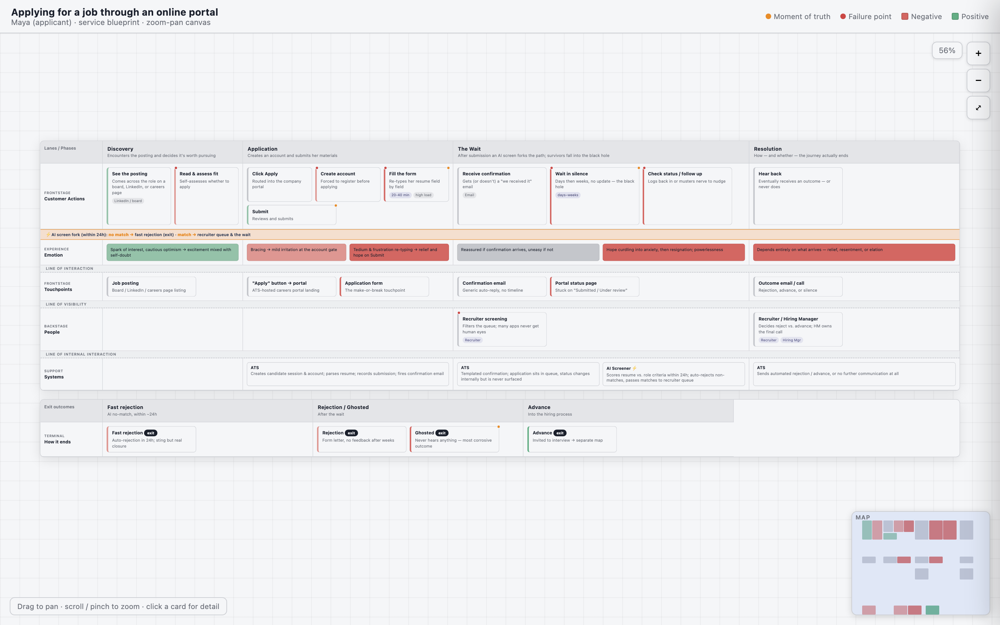

Build, update, and express customer journey maps in plain conversation — a living document that grows with your project, then renders for whoever's in the room.
$ git clone --depth 1 https://github.com/cguodesign/customer-journey-map-skill ~/.claude/skills/journeyYou don't invoke modes or learn commands. You describe your situation; the skill does the structure.
Map how a first-time buyer sets up online payments.
Builds a structured journey from the conversation — milestone by milestone, no form to fill.
We just launched instant verification — fold it in.
Updates with a diff: what changed, why, and the downstream steps it touches — never a silent redraw.
Turn this into something for Monday's kickoff.
Renders the same map for that audience — a story, a one-pager, a spec, or an interactive map.
Where's it weak, and what should we map next?
Reviews it for soft spots and proposes the adjacent journeys worth mapping.
Describe the flow in plain words; the skill keeps a canonical journey file — milestones, steps, and the fields that matter on each.
~100 service-design fields sit underneath. You never pick from a menu — they surface only when the conversation calls for them.
It's a file that persists across sessions and grows by diff. Come back in three weeks and it's still your collaborator, not a blank slate.
Every field tracks what you asserted, what's evidence-backed, and what the model guessed — so it won't dress a guess up as a statistic.
The depth underneath every map — 13 categories from service-design practice.
Every one of these is the same fifteen-step file, asked a different question — nothing is redrawn by hand. They all open dark; the switch in the corner of each one re-seeds the palette live. Click any to explore it.

Make an interactive map our team can pull up in the review.
Explore live →
Plot the emotional arc — I want to see where it bottoms out.
Explore live →
Just give me every step as a card I can open up.
Explore live →
Show me where this journey actually forks — I don't buy that it's a straight line.
Explore live →
Draw the time to scale. I want to see how much of this is just waiting.
Explore live →
Where is this map thin — and which parts of it are guesses?
Explore live →
Give me a dark timeline where the weeks-long wait dwarfs every step.
Explore live →
Turn it into a storyboard — frame by frame, like a film.
Explore live →
Put the whole blueprint on one canvas I can pan around.
Explore live →Renderings hold no literal colours — only token names. Re-seed the top tier and the whole palette re-derives: lane tints, the valence scale, rules, shadows, dark mode. Semantic colours deliberately stay put, because a moment of truth marker that repaints itself when your logo changes isn't a marker.
This one is live. Use the switch in its top-right corner — that's a real rendering, not a picture of one.
No. You talk; it writes the structure. You never touch the schema, a form, or a diagram tool.
No. It's a Claude Code skill — pure markdown and static templates, zero runtime dependencies. You install it by cloning into your skills folder.
To ./.journey/<name>.md in your project — a plain markdown file you own. No storage? It works entirely in the conversation and hands the map back to you to save.
Today it's tuned for an individual building deep, durable understanding. Shared, multi-contributor maps (Notion/Drive) are on the roadmap.
It's open source under MIT. You bring Claude Code.